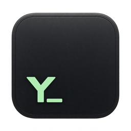

Real shells, real PTYs
Powered by xterm.js and native pseudoterminals. zsh and bash start as login shells, so launching from Finder picks up your full PATH.

Y-TermY-Term is a native-feeling terminal for Apple Silicon that keeps your real shell and adds to it. Icons and one-click commands appear right beside your output: copy or delete a branch from git branch, open a changed file as a VS Code diff, and see at a glance which coding agent needs you.
Free and open source · MIT license · macOS on Apple Silicon · signed and notarized
Your shell, your tools, and your dotfiles stay exactly as they are. Y-Term watches what your commands print and adds small icons and custom commands where they help, like a copy button beside a branch name or a diff behind a file path. Nothing runs until you click it, and anything destructive asks first. More commands are on the way.
Powered by xterm.js and native pseudoterminals. zsh and bash start as login shells, so launching from Finder picks up your full PATH.
Sessions live in a resizable sidebar. A new tab opens beside the one you opened it from, in that shell's current directory, and closing a tab cleanly terminates its child processes. Drag a tab up or down to put your sessions in the order you want. Hold ⌘ to number your tabs, and press ⌘1–⌘9 to jump to one.
⌘-click a changed file in git status output to open it in VS Code's diff editor, compared with the staged or committed version. ⌥⌘-click opens the file itself.
⌘-click URLs to open them in your browser, and local file paths (relative, quoted, or file: links) in their default macOS app.
After git branch in zsh, each local branch gets copy and delete buttons. Copy puts the name on your clipboard; delete confirms first, runs git branch -d, and offers -D only if the branch isn't merged.
Agents that report OSC 7501 status show Working, Blocked, Done, or Idle beside their tab. Blocked and Done tabs add to the Dock badge, so you know which agent needs you, and closing a Working tab asks first so a stray ⌘W never stops an agent mid-task.
Shift+Enter inserts newlines in agents that support CSI u, and pasted images reach tools that read the clipboard. After an update, Claude Code and Codex tabs resume their conversations.
An optional zsh integration marks prompts and commands without touching your dotfiles. Jump between prompts with ⌘↑ and ⌘↓.
OSC 9 and OSC 777 notifications from long-running commands highlight their tab, so you notice when a background job needs you.
Drop files or folders onto a terminal to insert safely quoted absolute paths. Nothing runs until you press Enter.
Y-Term checks GitHub for new stable releases and installs signed updates in one click, after confirming with you first.
A calm palette in both themes. Font, theme, and scrollback apply immediately, and the app never saves terminal output or credentials.
| ⌘T | New tab in the current directory |
| ⌘W | Close tab and end its shell (asks first while an agent is working) |
| ⌃Tab / ⇧⌘] | Next tab |
| ⌃⇧Tab / ⇧⌘[ | Previous tab |
| ⌘1–⌘9 | Go to a tab by position (⌘9 is the last tab). Hold ⌘ to see the numbers |
| ⌘B | Show or hide the sidebar |
| ⌘↑ / ⌘↓ | Previous or next prompt (zsh with shell integration) |
| ⌘F | Search the terminal |
| ⌘+ / ⌘− / ⌘0 | Bigger, smaller, and reset font size |
| ⌘K | Clear the display |
| ⌘, | Settings |
Requires macOS on Apple Silicon. Intel Macs aren't supported yet.
git clone https://github.com/younghoandrewchaa/y-term.git cd y-term npm install npm start
Requires Node.js 24.13 or later and the Xcode Command Line Tools.